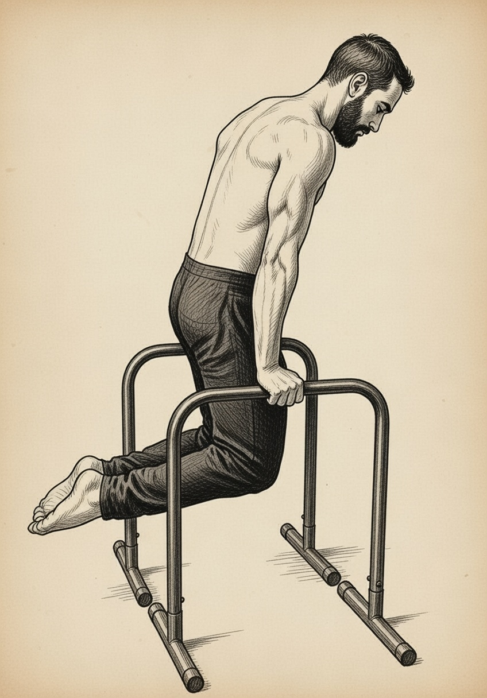
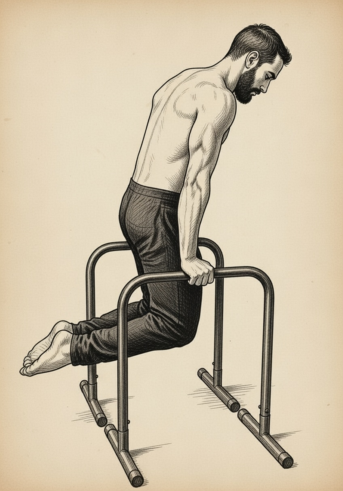

THE
RING MUSCLE UP
The Complete Training Guide
From Your First Ring Hang to a Clean, Strict Muscle Up
The Bodyweight Gym
Before starting any exercise program, you should consider consulting a qualified fitness or sports adviser to ensure the program is suitable for you. Do not undertake training with The Bodyweight Gym without professional or qualified instruction on proper uses and appropriate techniques. Use common sense when training and understand your personal limitations.
Any program involving resistance training, gymnastics training and/or activities at height is potentially dangerous and could lead to severe injury or death. The user assumes all risks and responsibilities for injuries or death which may occur during or following use of this equipment in any manner whatsoever. The Bodyweight Gym cannot be held responsible for any injuries which may occur as a result of training with this program or the associated equipment.
The Bodyweight Gym and buyer disclaim any express or implied warranty, including, but not limited to, warranties of merchantability or fitness for a particular purpose. Buyer assumes all liability in use of this program.
The Bodyweight Gym advocates the learning of skills with strict movements.
© The Bodyweight Gym. All rights reserved.
No part of this publication may be reproduced without written permission.
The ring muscle up is an exercise that involves moving from below a set of rings to the support position above a set of rings. In the sport of gymnastics it's called getting on the rings and isn't even a thing. For many fitness enthusiasts the ring muscle up is a highly sought-after expression of strength and mobility.
Often the ring muscle up is referred to as a skill. I prefer to think of the ring muscle up as an expression of strength and mobility. Skill exercises are difficult to develop and often require elements that are harder to train, such as balance or novel movement (e.g. press handstand). The ring muscle up contains neither of these things. It is easy to learn with a solid series of progressions, hard work and persistence.
This guide will break down your ring muscle up progression into 6 different levels. Each level will have a graduation testing requirement. In order to progress smoothly, I strongly recommend that you satisfy each graduation test before progressing to the next level.
For many people the ring muscle up presents both a mobility and strength challenge. If you are reading this guide it is likely that you will have to get stronger and develop more mobility to complete a ring muscle up.
For the sake of clarity, by referring to a ring muscle up I mean a strict ring muscle up, with minimal pike in the hips and no momentum generated by swinging or kipping.
The most common question I hear is — "How long will it take?" This is impossible to answer; it depends entirely on your current and historic strength and mobility level. If you learn to use the gymnastic rings as a child you will redevelop the movement faster than an adult with limited or no exposure to this kind of upper body strength training.
The ring muscle up demands strength, and is expressed through the entire upper body chain. It requires the back, shoulders, upper and lower arms to function together. If you have spent time training these muscles in isolation you may need to step back and assess and strengthen any weak links in the chain. It is likely that your shoulder and elbow joints and the associated connective tissue will need to strengthen and improve.
The goal of training for the ring muscle up (and all strength training) is to stress your body such that you can recover within a few days, then do it again. If you stress your body too much this is called an injury. Injuries may occur if you train for long enough, but with an appreciation for strength training basics you can minimize the risk of injury. You can only progress as fast as the weakest link in the chain you are aiming to strengthen.
Muscles replace themselves approximately every 3 months. Tendons and ligaments replace themselves approximately every 9 months and bone replaces itself every 14–15 months. So if you are getting strong and your elbows are killing you — slow down. Your elbow joint can't keep up with the rate of progress.
Training for your ring muscle up should be no more than once every 2 days. Give yourself time to recover between efforts. If you are training intensely or very regularly take a planned deload week every 5 weeks. In a deload week you will still train however you will only complete 1 set of everything rather than the usual volume.
If you are completely new to training upper body strength you will begin at Level 1. However if you have some experience in training upper body strength you will first need to figure out what level is appropriate to you. Use this benchmarking test to find an appropriate level:
| Level | Entry Requirements |
|---|---|
| 1 | Zero experience or unsure. |
| 2 | 3 × pull ups, 3 × bar dips. |
| 3 | Experience with false grip, 3 × false grip pull ups, 3 × ring dips. |
| 4 | Reasonably comfortable with false grip, 5 × false grip pull ups, 5 × ring dips. |
| 5 | Can do a ring muscle up but want to clean it up. |
Your training should be planned and arranged in blocks of effort. The following is an example of how you can train and recover such that you give your body enough stress to grow and enough time to recover.
Pick a level and a set range that is appropriate to your current strength and endurance. If in doubt be more conservative. An injury is the worst outcome. Work hard for 4 weeks. Take the 5th week off as stated above.
Add a set to each exercise you completed in block 1. Work hard for 4 weeks. Take the 5th week off. Repeat this process of loading, deloading and adding volume until you have reached the upper set range prescribed for your workout.
Test yourself for the next level entry requirements (refer Benchmarking section). If you are now capable of the next level, begin the process again with the next level of exercise, slowly increasing volume over 5 week cycles.
Continue developing your training program based on your progress.
Remember: Learning a muscle up from scratch may take more than 12 months, so patience is key.
This workout program offers 6 different levels in order to safely progress you from the beginning to a clean, safe, strict ring muscle up. Each level requires you to possess greater strength and mobility. Be conservative and start with a level that is achievable. If you find you are not progressing at a particular level, drop back to the previous level for 1 block of training before moving forward again.
Before each workout, be sure to warm yourself up adequately. 5–10 minutes of any light cardio, running or skipping etc of your choice. Anything to get a light sweat on.
As a level 1 athlete you are right at the beginning of developing bent arm strength. This is something that should not be rushed. Everyone will progress at their own rate. Do the work necessary to make this level feel easy before progressing to level 2. This workout is all about developing wrist strength and mobility, shoulder extension and basic pushing and pulling strength.
Start → Movement → Hold (last rep 10 sec)


False grip requires flexibility through the back of the forearm (extensors) and strength through the inside of the forearm (for gripping). This mobility exercise will develop the required strength and mobility to become comfortable in false grip.

The transition phase of a muscle up, moving from the top of the pull up to the bottom of the dip, requires the upper arms to move strongly into extension. For many people this range of motion is lacking. This stretch will build the required mobility to stay safe while practicing ring muscle ups.

Hanging is the fundamental strength expression needed to build more powerful movements such as pull ups and eventually muscle ups. While simple, even the shortest periods of time hanging from a set of rings will challenge most people. Keep this one simple. Hold the rings, feet off the ground, don't let go.

False grip is a method of holding the rings (or bar) that places your wrist on top of the ring. It requires your wrist to bend at 90 degrees while still being able to grip the ring with your fingers. Yes it hurts your wrists. They will toughen. It takes a long time to become comfortable with false grip. Take your time. Chalking the heel of the hand and wrist where primary contact is made with the rings will make it easier.
Start (lean back) → End (thumbs to chest)

Hold the rings in false grip, lean back holding the rings at arm's length. Maintain false grip. Row the rings in towards your body pulling until your thumbs touch your chest. Return to the straight arm position slowly. If you find it too hard to complete all the reps walk backwards to reduce the resistance.
Bottom (ring to shoulder) → Top (lockout, then turn out)


Hold yourself in a plank position supported on the rings in front of you. Keeping your elbows in tight, lower down to the bottom position until the ring touches your shoulder. Push back up to the beginning position and externally rotate the rings for a moment.
As a level 2 athlete you now have some strength in bent arm pulling and pushing. You should feel comfortable performing a pull up or a dip. As you progress your strength pay attention to how your shoulders and elbows feel. If they begin to hurt or feel less than great, consider dropping back to level 1 to build a larger foundation.
Continue False grip stretch (× 10 HLR 10 sec) and Arm extension stretch (× 5 per side HLR 10 sec) as in Level 1.
This takes the hang as practiced in level one and builds on it by adding false grip. Maintaining false grip is your priority; hang from a set of rings for the prescribed period of time.
Start (lean back) → Middle (row to chest) → End (rings to armpits, support)


This variation of the ring row begins as a false grip ring row and incorporates the transition movement at the top of the row. Begin the movement leaning back holding the rings with straight arms. Row the rings into your body until your thumb touches your chest. At this point drop your hips aggressively at the same time pulling the rings across your chest and into your armpits. Catch your balance with the rings supporting your weight. Reverse this process till you are in the beginning position to complete the movement.
Start (dead hang) → Middle (scap set) → End (chin over rings)


Holding the rings (or bar) from below, using a normal grip complete a pull up. Begin from a dead hang, depress and retract your shoulder blades (pull your shoulders down). Then bend your elbows pulling your chin over the rings. Return to a dead hang slowly in control to complete the repetition.
Bottom (dip down) → Top (support, lockout)
 

Using a set of parallel bars, complete bar dips. Begin in a support position with your shoulders depressed (keep your shoulders away from your ears); dip down as low as you can control before pressing back into support position.
As a level 3 athlete you should feel very comfortable with normal pull ups and dips using rings and bars. As you progress to integrating your false grip into higher power expressions of pulling and pushing pay attention to how your wrists and elbows feel. The skin on your wrists will take a beating; you can tolerate this. However if the joints are beginning to hurt or feel less than great, consider spending more time at level 2.
Continue False grip stretch and Arm extension stretch as in Level 1.
Start (false grip hang) → End (thumbs to chest)

Begin the false grip pull up from a false grip hang. Initiate the movement by pulling your shoulders down and back before bending your elbows and pulling yourself up. Continue until your thumbs touch your chest. This range of motion is very important as it sets up the position to complete the transition.
Top (support, rings turned out) → Bottom (rings to shoulder)


Begin in support position above the rings with the rings turned out (palms facing forward). As a beginner, make sure you keep the rings very close to your body. The further away from you they move the harder you will have to work. Turn the rings back to parallel and lower down through the dip. Continue until the rings touch your shoulder. For many people this will feel like a very deep dip. From here push back up to support and turn the rings out to finish the rep.
Get to position (thumbs to chest) → Hold (feet off ground)

For most people the pull up is hardest when your hands get close to touching your body. This exercise is in place to strengthen this range of motion. Pull up, or jump up into position such that your thumbs touch your chest. Hold this position with your feet off the ground.
Hold the rings in false grip, lean back holding the rings at arm's length. Maintain false grip. Row the rings in towards your body pulling until your thumbs touch your chest. Return to the straight arm position slowly.
As in Level 1. Plank on rings, lower until ring touches shoulder, push up and externally rotate the rings.
As a level 4 athlete you should now be feeling quite strong on the rings. Your pull ups and dips should feel strong and you should be developing some strength in your false grip and transition. As you begin working eccentric muscle ups pay particular attention to retaining control through the transition. This is the most difficult part of the movement.
Continue False grip stretch and Arm extension stretch as in Level 1.
Negative sequence: Support → Dip → Transition → Hang

Begin the movement above the rings (jump or use a box to get into position). Lower through the dip slowly for a count of 4. Once you reach the bottom of the dip, lean back slowly bringing your thumbs around your chest until you are hanging at the top of the pull up position in false grip. This part of the movement is the hardest portion of the exercise. From here slowly lower down to a hang position in the rings while maintaining false grip. You have completed 1 rep.
As in Level 3. Pull until thumbs touch chest.
As in Level 3. Rings turned out at top, lower until rings touch shoulder.
By now you should have or almost be ready to attempt your first full ring muscle up. When you prepare to complete the muscle up, practice the key positions you need to hit. You have practiced them during your time working at level 4. It is tempting to begin the transition early — this is natural as it is the hardest part of the movement so you want to get it done. Resist this urge; rather ensure you complete the pull up completely with your thumbs touching your chest before pulling through the transition into the bottom position of the dip. For most people it is not easy to push out of the dip. If you are unable to push out of the dip, don't be tempted to throw your legs around and swing wildly to finish your first muscle up. Return to an earlier level and work at correcting your technique.
Full sequence: 1. Hang → 2. Pull → 3. Transition → 4. Press → 5. Support (turn out)


Begin hanging under the rings in false grip. Pull up to the rings until your thumbs touch your chest. Pull the rings apart leaning forward and pulling the rings into your armpits. Once you are stable at the bottom of the dip position push up to support. Finally turn the rings out at the top. Then lower down through dip, transition and finally pull up to complete the rep hanging in false grip under the rings.
By now you are probably stoked that you can do a ring muscle up and keen to practice the movement as often as possible. Be cautious. Just because you can do something doesn't mean you should. Many people over do the high power work (i.e. muscle up) and neglect the foundational work that got them to this point. This will increase your chance of getting injured dramatically. With this in mind, it is now time to condition yourself to the muscle up movement so that it becomes something that is easy to do. I would recommend completing the following workout every 2 or 3 days.
Complete the following:
1 × ring muscle up, 3 × dips, muscle down, 3 × pull ups
Work up to completing 10 sets of this within a 30 min window. Once that is easy move to:
2 × ring muscle up, 6 × dips, muscle down, 6 × pull ups
Work up to completing 10 sets of this within a 30 min window.
The Wrap Up
At this stage the ring muscle up should feel easy. Congratulations, you have mastered the ring muscle up. Now onto bigger and better things.